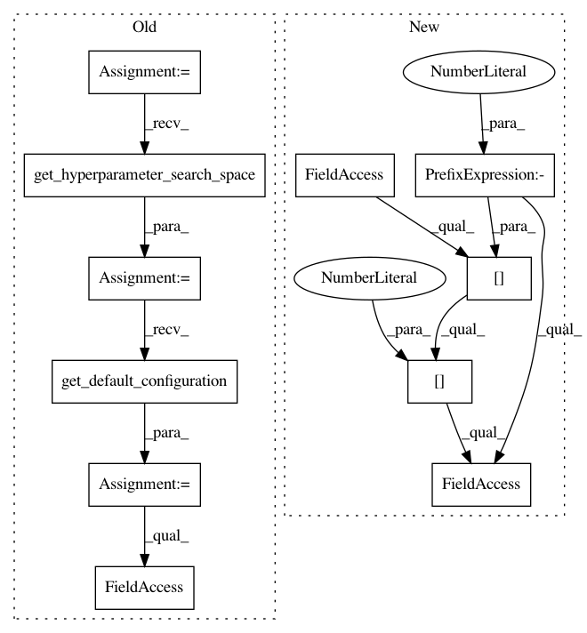

8118fe98fb3c10515476ca49fceef2162a9754af,test/test_pipeline/test_classification.py,SimpleClassificationPipelineTest,test_predict_proba_batched,#SimpleClassificationPipelineTest#,467
Before Change
assert_array_almost_equal(prediction_, prediction)
def test_predict_proba_batched(self):
cs = SimpleClassificationPipeline.get_hyperparameter_search_space()
default = cs.get_default_configuration()
// Multiclass
cls = SimpleClassificationPipeline(default)
X_train, Y_train, X_test, Y_test = get_dataset(dataset="digits")
cls.fit(X_train, Y_train)
X_test_ = X_test.copy()
prediction_ = cls.predict_proba(X_test_)
// The object behind the last step in the pipeline
cls_predict = mock.Mock(wraps=cls.pipeline_.steps[-1][1])
cls.pipeline_.steps[-1] = ("estimator", cls_predict)
prediction = cls.predict_proba(X_test, batch_size=20)
self.assertEqual((1647, 10), prediction.shape)
After Change
X_test_ = X_test.copy()
prediction_ = cls.predict_proba(X_test_)
// The object behind the last step in the pipeline
cls_predict = mock.Mock(wraps=cls.steps[-1][1].predict_proba)
cls.steps[-1][-1].predict_proba = cls_predict
prediction = cls.predict_proba(X_test, batch_size=20)
self.assertEqual((1647, 10), prediction.shape)
In pattern: SUPERPATTERN
Frequency: 4
Non-data size: 11
Instances
Project Name: automl/auto-sklearn
Commit Name: 8118fe98fb3c10515476ca49fceef2162a9754af
Time: 2016-07-13
Author: feurerm@informatik.uni-freiburg.de
File Name: test/test_pipeline/test_classification.py
Class Name: SimpleClassificationPipelineTest
Method Name: test_predict_proba_batched
Project Name: automl/auto-sklearn
Commit Name: 9a62e98e14c1ad88b29baee3e5ba55cb45ac7aec
Time: 2016-12-31
Author: feurerm@informatik.uni-freiburg.de
File Name: test/test_pipeline/test_classification.py
Class Name: SimpleClassificationPipelineTest
Method Name: test_predict_batched
Project Name: automl/auto-sklearn
Commit Name: 8118fe98fb3c10515476ca49fceef2162a9754af
Time: 2016-07-13
Author: feurerm@informatik.uni-freiburg.de
File Name: test/test_pipeline/test_classification.py
Class Name: SimpleClassificationPipelineTest
Method Name: test_predict_batched
Project Name: automl/auto-sklearn
Commit Name: 9a62e98e14c1ad88b29baee3e5ba55cb45ac7aec
Time: 2016-12-31
Author: feurerm@informatik.uni-freiburg.de
File Name: test/test_pipeline/test_classification.py
Class Name: SimpleClassificationPipelineTest
Method Name: test_predict_proba_batched